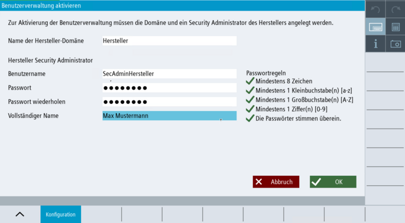

Einleitung
Wenn Sie die Funktion der Benutzerverwaltung aktivieren möchten, müssen Sie zunächst eine lokale Hersteller-Domäne mit zugehörigem Security Admin anlegen.
|
Hinweis
|
Was macht der Hersteller / Was macht der Anwender?
Der Security Admin des Herstellers kann nach dem Anlegen der eigenen Domäne für den Anwender eine eigene Domäne mit Benutzergruppen und Benutzern vorkonfigurieren. Bei Übergabe der Maschine an den Anwender können diese Daten vertrauensvoll an den Anwender übergeben werden.
Der Security Admin Hersteller erstellt auch die Anwender-Domäne und den ersten Benutzer Security Admin Anwender. Mit diesem Security Admin Anwender kann der Anwender seine eigenen Benutzerkonten und Benutzergruppen hinzufügen.
|
|
Achtung
|
Mit aktivierter Benutzerverwaltung kein Anmelden mehr mit klassischen Zugriffsstufen-Kennwörtern
-
Sobald Sie die Benutzerverwaltung aktiviert haben, ist das klassische Anmelden über die definierten Zugriffsstufen-Kennwörter NICHT mehr möglich.
-
Anmelden über Schlüsselschalter wird im Rahmen der neuen Benutzerverwaltung nicht unterstützt.
-
Nach Aktivierung der Benutzerverwaltung können Sie sich nur noch über Benutzername und Passwort der definierten Benutzer in SINUMERIK Operate anmelden. Stellen Sie deswegen vorab sicher, dass Sie Funktionsweise der Benutzerverwaltung sowie das generelle Projektieren von Rollen, Gruppen und Benutzern verstanden haben.
-
Nach Aktivierung der Benutzerverwaltung werden der PI-Dienst: LOGIN und der PI-Dienst:LOGOUT nicht mehr unterstützt.
-
Nach der Deaktivierung der Benutzerverwaltung sind wieder die Zugriffsstufen-Kennwörter aktiv, die vor der Aktivierung der Benutzerverwaltung in der NCU gültig waren.
|
|
Achtung
|
Funktionen der Benutzerverwaltung immer abhängig vom Login
Beachten Sie, dass die Funktionen der Benutzerverwaltung abhängig sind vom aktuellen Login und den jeweiligen Rechten / Rollen des angemeldeten Benutzers. Sie können deswegen möglicherweise nicht alle Funktionen der Benutzerverwaltung nutzen, wenn Sie die erforderlichen Rechte/Rolle für diese Funktion nicht besitzen.
|
|
Achtung
|
Passwort Security Admin vergessen?
-
Wenn es keinen Security Admin der Anwender-Domäne mehr gibt, der sein Passwort noch weiß, muss ein Admin der Hersteller-Domäne die Benutzerverwaltung manuell deaktivieren. Bei der Deaktivierung der Benutzerverwaltung werden unwiderruflich alle konfigurierten Daten gelöscht (siehe Kapitel Benutzerverwaltung deaktvieren) und die alten Zugriffsstufen-Kennwörter sind wieder gültig, die vor der Aktivierung der Benutzerverwaltung gültig waren. Danach kann der Hersteller die Benutzerverwaltung neu einrichten und aktivieren.
-
Wenn es keinen Security Admin der Hersteller-Domäne mehr gibt, der sein Passwort noch weiß, muss ein Admin der Hersteller-Domäne die NCU komplett löschen und die CNC-Software neu installieren, da ohne Passwörter für die Rolle Security Admin Hersteller eine manuelle Deaktivierung der Benutzerverwaltung nicht mehr möglich ist und ein Anmelden mit der Rolle Security Admin Hersteller ebenfalls nicht mehr möglich ist.
Für ein Zurücksetzen der NCU von einem USB-Service-Stick, wählen Sie im SINUMERIK ONE Service System den Menüpunkt "Clear all + reinstall system SW from USB stick and create system restore point“). Anschließend müssen Sie die CNC-Software neu in Betrieb nehmen.
-
Bewahren Sie deswegen alle Passwörter - insbesondere die Passwörter für die Security Admins - immer äußerst sorgfältig auf! Wir empfehlen die Verwendung eines Passwort-Managers.
-
Wie empfehlen, für beide Domänen immer jeweils mehr als einen Security Admin anzulegen, für den Fall, dass Sie ein Passwort vergessen.
|
Voraussetzung
|
Hinweis
|
Benutzerverwaltung auf dem IPC
Bevor Sie die Benutzerverwaltung auf IPC aktivieren, sollten Sie die angeschlossenen NCUs koppeln. Ohne Kopplung bleibt die NCU ohne Benutzerverwaltung, und der IPC kann die Zugriffsebene des NCK nicht entsprechend ändern.
|
Vorgehensweise

Benutzerverwaltung aktivieren
Im Bedienbereich "Inbetriebnahme" rufen Sie die Benutzerverwaltung über die Softkeys "Security > Benutzerverwaltung" auf. Die Übersichtsseite zur Benutzerverwaltung öffnet sich im Softkey "Konfiguration". Klicken Sie auf "Benutzerverwaltung aktivieren". Die Seite "Benutzerverwaltung aktivieren" öffnet sich, in der Sie zunächst den Namen für die Hersteller-Domäne festlegen und einen Security Admin Hersteller definieren. Wählen Sie einen Namen für die Hersteller-Domäne. | Hinweis | Der Name für die Domäne kann nachträglich nicht mehr geändert werden. |
Vergeben Sie einen Benutzernamen für den Security Admin Hersteller. Vergeben Sie ein Passwort für den Security Admin Hersteller. Beachten Sie dabei die vorgegebenen Standard-Passwort-Richtlinien. Das Passwort muss mindest aus 8 Zeichen bestehen. Es muss mindestens einen Kleinbuchstaben, einen Großbuchstaben und eine Ziffer enthalten. Empfehlungen für die Vergabe von sicheren Passwörtern finden Sie im .
Sie können die Standard-Passwort-Richtlinien nach Aktivierung der Benutzerverwaltung über den Dialog Richtlinien ändern. Wiederholen Sie das Passwort. Tragen Sie optional den Namen des Security Admins ein. Der vollständige Name (bzw. die Initialen davon) werden für die Identifizierung des Benutzers im Anmelde-Button herangezogen. Wenn kein vollständiger Name hinterlegt wird, wird der Benutzername herangezogen. Beachten Sie in diesem Zusammenhang die zentralen Hinweise zur Datenschutzgrundverordnung. Bestätigen Sie ihre Auswahl mit "Ok".
|
Ergebnis
Die Funktion der Benutzerverwaltung ist nun aktiviert.
Eine lokale Hersteller-Domäne ist definiert.
Sie sind als Security Admin Hersteller im System eingeloggt.
| Achtung |
Aktivierte Benutzerverwaltung ersetzt die klassische Form der ZugriffsstufenverwaltungBeachten Sie, dass die aktivierte Benutzerverwaltung komplett die klassische Form der Zugriffsstufenverwaltung mit allen definierten Kennwörtern ersetzt. |
Weitere Schritte